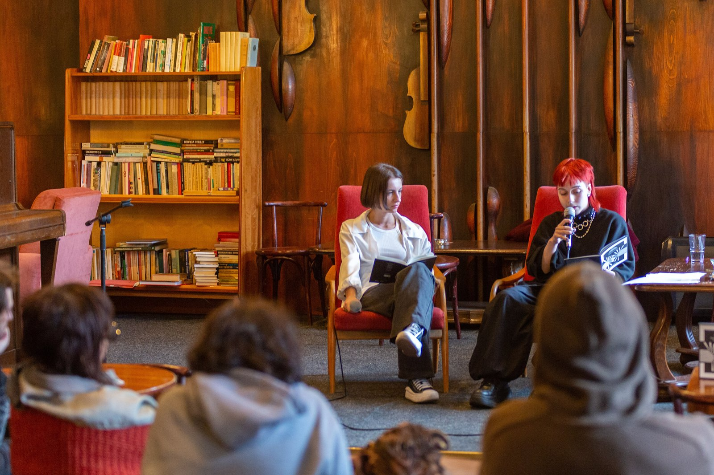

Part 01
The Origin Story
What actually pulled this leader into mission-driven work.
We start with what actually pulled the guest into this work, which is rarely the version in the annual report. It is usually a person, a phone call or a bad week.
The podcast
Coffee. Leadership. Purpose. Real conversation. A new episode every Thursday, recorded live at the corner table.
What the show is
Thoughtful conversations with people building careers, organizations, and movements around purpose.
Latte with Lata is a conversational podcast with mission-driven leaders: people who have built careers, organizations or movements around purpose rather than profit alone. It has the warmth and pace of a conversation over coffee, and the substance of a real discussion about leadership, impact and the decisions that shape the work.
Most leadership shows are about scale, growth and metrics. This one is about the person behind the mission: their motivations, their doubts, and the human decisions behind the work. Real leadership lessons come out over coffee, not in a boardroom.
Behind every organization, movement, and meaningful career are difficult decisions, unexpected lessons, doubts, and defining moments. Latte with Lata brings those stories to the table.
Pull up a chair and discover the stories behind mission-driven work.
Who it is for
For leaders, aspiring leaders, professionals, and anyone searching for more meaning in the work they do.
Latte with Lata is a space for conversations about leadership, impact, purpose, and the realities of mission-driven work.
The format
Every conversation moves through the same four parts. Guests know them in advance. They do not get the questions.
Part 01
What actually pulled this leader into mission-driven work.
We start with what actually pulled the guest into this work, which is rarely the version in the annual report. It is usually a person, a phone call or a bad week.
Part 02
A real decision where mission and practicality were in tension.
One real decision where the mission and the practical answer pulled in different directions. We ask what it cost, who disagreed, and whether they would make the same call again.
Part 03
An honest, unpolished lesson from the work.
The honest, unpolished lesson: the thing the guest wishes someone had said in year one. No frameworks, just what happened and what they do differently now.
Part 04
A lighter, personal closing segment.
We finish lighter. What they are reading, how they take their coffee, and what they do when they are not doing this.
Every episode has all four parts. The tag marks the part the conversation leaned on most.
Thursday nights
Every episode is recorded live in the cafe, in front of whoever turns up. There is no studio and no second take.

6:30 pm
The cafe reopens and the chairs turn to face the corner table. It is free. Seats are first come, first seated, or you can reserve one.
7:00 pm
One guest, one conversation, four parts, with a short break halfway. We finish by 8:15 pm. No slides, no panel, no pitch.
8:15 pm
There is no question time on the recording. The guest stays in the room afterwards, so ask them in person.
The next Thursday
We cut the evening down to about 40 minutes. The coughs come out and the pauses stay in. It is on every platform the following Thursday morning.

The host
Lata Singh hosts Latte with Lata. She comes to these conversations as a practitioner, not as an outside observer.
By day she is a senior operating leader in one of the country's largest safety-net healthcare networks, overseeing operations, quality, workforce and finance at scale. That work has given her hands-on fluency in what mission-driven organizations deal with every day: compliance, funding structures, workforce and public accountability.
She is also pursuing doctoral study in leadership and innovation, which brings an academic and reflective lens to the table alongside the operational one.
That is the edge of the show. She is fluent in the pressures, the trade-offs and the quiet victories that come with running a purpose-built organization, and those are the things she asks about.
A personal platform
Latte with Lata is a personal platform and is independent of any employer or institution. Nothing said here is official communication on anyone's behalf.
On why the show exists
“Real leadership lessons come out over coffee, not in a boardroom.”
The other chair
We look for people who run something built around a mission: a clinic, a council service, a charity, a school, a social enterprise. Job title matters less than whether you have a decision you are willing to talk about honestly.
You do not need media training or a book to promote. You need an evening, an origin story and one hard trade-off.
We read everything and reply within 2 working days. We cannot say yes to everyone, and nobody pays to be on the show.

LATTE WITH LATA - NEW EPISODE EVERY THURSDAY
Listen
A new conversation every Thursday, wherever you already listen.
Episode 88: The grant we turned down, with Marisol Vega.
 Episode 88
Episode 88
Marisol said no to the biggest cheque in her nonprofit's history. On strings, dignity, and the board meeting that followed.
 Episode 87
Episode 87
Kwame runs a clinic where nobody is turned away. On the maths of a Tuesday morning, and the lesson no residency teaches.
 Episode 86
Episode 86
Hannah rebuilt a benefits form that failed half the people who started it. On slow change inside government, and who decides it worked.